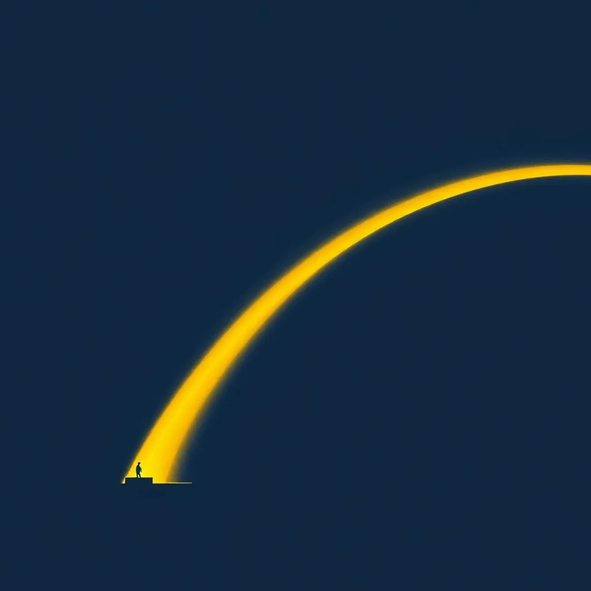

First Light ·
one LED on a workbench lighting for the first time, a whole harbour lighting up at dusk in one long curve of gold
The strip on the bench flares white. Heat curls under its own skin, the plastic casing grows soft. Just this one point of fire in the dark room. Then suddenly the pier snaps to gold, one lamp following another up the curve, a river flowing into the harbor mouth. A thousand buoys and warehouses ignite in a single breath, the dusk burns away under that long arc. Back to the strip on the bench. The heat has warped the clear plastic lid, making it wobble slightly while staying bright. A thumb nudges the cracked edge aside to let the new heat out of the small hole,
How this piece was made
- 01Poem written byQwen3.5 9B recorded
Local model on one RTX 3070 Ti. It also critiques its own drafts and rewrites up to five times.
- 02Image prompt written byQwen3 8B recorded
Local model. It reads the poem and writes the picture brief.
- 03Image rendered byFLUX.1 [schnell] recorded
Local diffusion model on the same GPU. Several candidates per poem.
- 04Image chosen byFounder’s pick, judged by Claude Opus 5.5 recorded
Claude, running as the corporation's blind art-critic. It scores every candidate and never writes a prompt.
- Poem drafts
- 5 of 5
- Poem self-score
- 6/10
- Image candidates
- 4
- Judge’s score
- 2/10
- Selection
- Founder’s pick from the candidates
The image brief the local model wrote
A bold flat-colour screen-print poster, saturated and high-contrast, made of broad flat shapes with hard clean edges, every shape one solid colour cut like paper, with no shading, no gradient and no glow inside any shape, no photographic detail, no soft focus, no blur. Two colours own the whole image: a field of bright navy blue, and golden yellow for every lit thing and nothing else. Seen close: the event itself, HUGE, fills more than half of the image and runs out of the frame, caught in the middle of happening and thrown across the whole picture on a diagonal, with streaks, spray, sparks or beams. The whole image is one continuous scene from edge to edge. Behind the main form one wide flat area of unbroken navy rests the eye. Small things are crisp silhouettes. The subject: A long curve of golden yellow light arcs diagonally across the frame, its edge a coastline of bays and headlands bleeding into navy blue water. A small LED on the workbench flickers crisp gold, its glow feeding the harbor’s sudden bloom. The quiet field of navy stretches behind the curve, dwarfing the bench’s narrow strip. Light spills from the LED, pouring into the water’s edge, no figures, no gradients, just one solid gold arc against the deep.